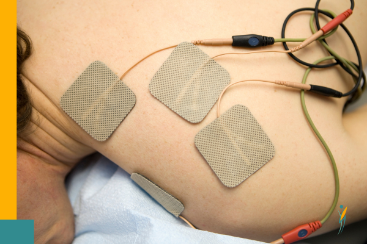

Treatment Methods
Advanced physiotherapy techniques and evidence-based treatment methods used at SK Physio Care to help you achieve optimal recovery and wellness.
Evidence-Based Treatment Approaches
At SK Physio Care, we utilize a comprehensive range of advanced physiotherapy techniques to provide effective, personalized treatment for our patients. Each method is carefully selected based on your specific condition and treatment goals.
Manual Therapy
Manual therapy is a cornerstone of physiotherapy treatment, involving hands-on techniques to restore movement, reduce pain, and improve function. Our skilled physiotherapist uses various manual therapy approaches to address musculoskeletal and neurological conditions.
Techniques Include:
- Joint Mobilization: Gentle, controlled movements to restore joint range of motion
- Soft Tissue Massage: Deep tissue techniques to release muscle tension and improve circulation
- Spinal Manipulation: High-velocity, low-amplitude thrusts to restore spinal alignment
- Myofascial Release: Techniques to release restrictions in connective tissue
Benefits:
- Immediate pain relief
- Improved joint mobility
- Reduced muscle tension
- Enhanced blood flow and healing


Dry Needling
Dry needling is an advanced technique involving the insertion of fine, sterile needles into trigger points within muscles to relieve pain and improve function. This highly effective treatment is particularly beneficial for chronic pain conditions and muscle dysfunction.
How It Works:
- Needles are inserted into tight muscle bands or trigger points
- Creates a local twitch response that releases muscle tension
- Stimulates the body's natural healing response
- Reduces pain signals and improves blood flow
Conditions Treated:
- Chronic muscle pain and tension
- Sports injuries and overuse syndromes
- Headaches and migraines
- Back and neck pain
Kinesiology Taping
Kinesiology taping involves the application of specialized elastic tape to support muscles and joints without restricting movement. This innovative technique provides therapeutic benefits while allowing you to maintain normal activity during treatment.
Taping Techniques:
- Muscle Support: Facilitates muscle contraction and relaxation
- Joint Stability: Provides support without limiting range of motion
- Lymphatic Drainage: Reduces swelling and edema
- Postural Correction: Helps maintain proper alignment
Applications:
- Sports injury prevention and treatment
- Postural correction and support
- Swelling and edema reduction
- Neuromuscular re-education


Exercise Rehabilitation
Exercise rehabilitation is fundamental to physiotherapy treatment, involving personalized exercise programs designed to restore strength, flexibility, and function. We create comprehensive exercise plans tailored to your specific condition and goals.
Exercise Types:
- Strengthening Exercises: Build muscle strength and endurance
- Stretching & Flexibility: Improve range of motion and prevent stiffness
- Balance & Proprioception: Enhance stability and coordination
- Functional Training: Practice daily living activities
Program Features:
- Individualized assessment and programming
- Progressive difficulty levels
- Home exercise programs
- Performance monitoring and adjustment
Electrotherapy
Electrotherapy uses electrical energy to promote healing, reduce pain, and improve function. We utilize various electrotherapy modalities as part of a comprehensive treatment approach to enhance recovery outcomes.
Modalities Used:
- TENS (Transcutaneous Electrical Nerve Stimulation): Pain management through nerve stimulation
- Ultrasound Therapy: Deep tissue heating for healing and pain relief
- Electrical Muscle Stimulation: Muscle re-education and strengthening
- Heat and Cold Therapy: Temperature-based pain and inflammation management
Therapeutic Benefits:
- Pain reduction and management
- Accelerated tissue healing
- Reduced inflammation and swelling
- Improved muscle function

Our Treatment Approach
How we combine methods for optimal results
Comprehensive Assessment
Detailed evaluation to identify the root cause of your condition and determine the most effective combination of treatment methods.
Integrated Treatment
Strategic combination of multiple techniques to address your condition from various angles for comprehensive healing.
Progressive Care
Continuous monitoring and adjustment of your treatment plan based on your progress and changing needs.
Treatment Method FAQs
Common questions about our treatment techniques
Are these treatments painful?
Most treatments are designed to be comfortable and pain-relieving. Some techniques like dry needling may cause brief discomfort, but we always work within your comfort level and adjust treatment accordingly.
How many treatment sessions will I need?
The number of sessions varies depending on your condition, severity, and individual response to treatment. We'll provide a personalized treatment plan during your initial assessment.
Can I exercise after treatment?
Yes, in fact, exercise is often part of your treatment plan. We'll provide specific guidelines for post-treatment activities to ensure optimal healing and prevent re-injury.
Ready to Experience Advanced Physiotherapy Care?
Schedule an appointment to receive personalized treatment using our advanced physiotherapy methods.